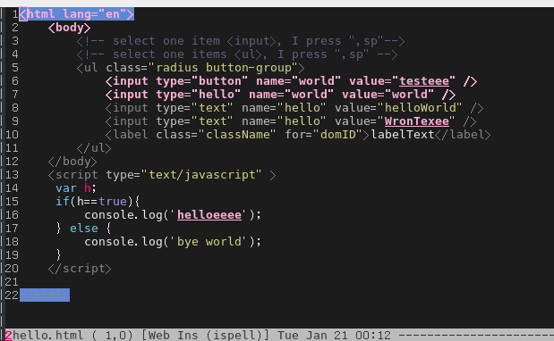
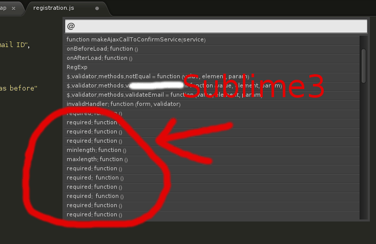
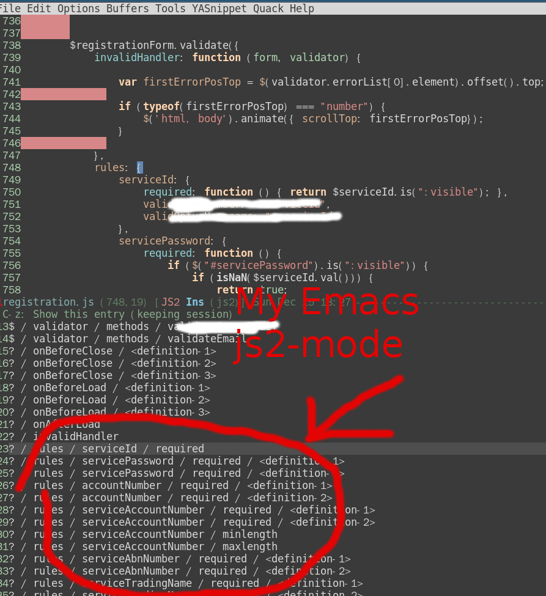
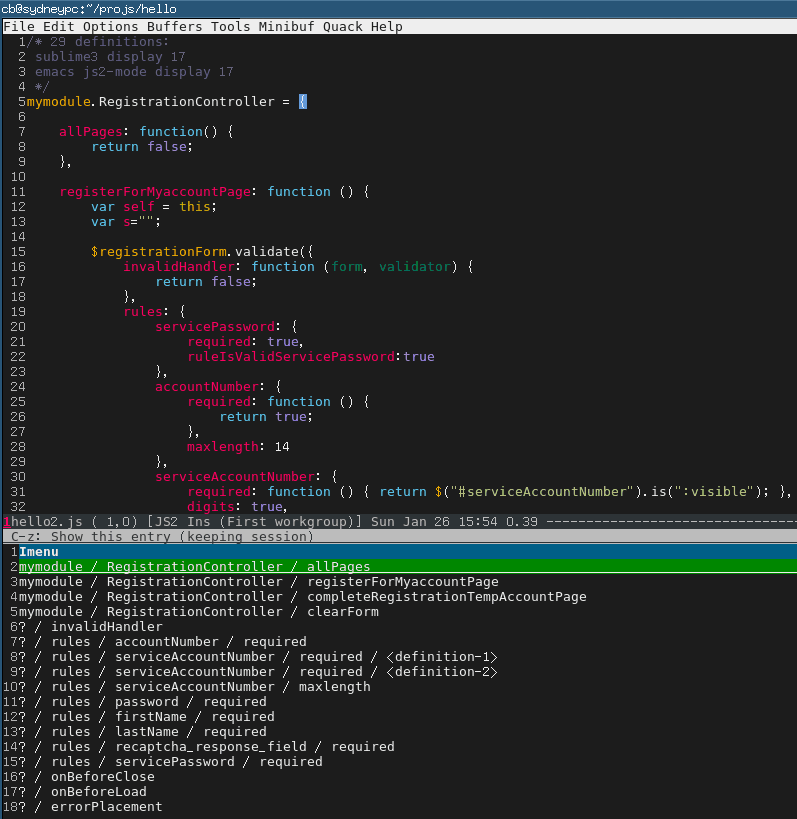

Switch input method in evil-mode (在Evil中快速切换输入法)
I need toggle on input method to input Chinese (or any other language) in Emacs. The default hot key is "C-\" which corresponds the command "toggle-input-method".
My problem is since I'm using evil-mode (a Vim simulation), I need switch evil state from "normal" to "insert" before toggling on input method.
That extra step is not necessary if you insert below code into ~/.emacs:
(defun evil-toggle-input-method ()
"when toggle on input method, switch to evil-insert-state if possible.
when toggle off input method, switch to evil-normal-state if current state is evil-insert-state"
(interactive)
(if (not current-input-method)
(if (not (string= evil-state "insert"))
(evil-insert-state))
(if (string= evil-state "insert")
(evil-normal-state)
))
(toggle-input-method))
(global-set-key (kbd "C-\\") 'evil-toggle-input-method)
BTW, I strongly recommend the Chinese input method eim written in pure elisp.
Emacs中切换其自带输入法的快捷键是"C-\",对应的命令是"toggle-input-method".
我遇到的问题是如果使用Evil(一种Vim模拟)则切换输入法不方便.我需要先切换evil-state至insert,然后才能切换输入法.
只要将以上代码贴入~/.emacs,则切换输入法可以更加高效:
顺便提一下,eim是我强烈推荐的中文输入法.
Effective spell check in Emacs
Table of Contents
I will use spell check for html as an example. But the solution also works for other languages.
1 Smart spell check in HTML
These days I'm maintaining some legacy web application.
My customer is very serious about the content displayed because it's used by many people. For example, any wording change will be reviewed by team from legal team, business team and QA team. Any typo will bring me much paper work in this flow.
Certainly I can use Fly Spell to do the spell check thing.
But a html file contains many html tags, spell-check everything is even worse than no spell check.
The key point is make spell checker smarter:
- only check text between html tag like `<label>Please input email</label>`
- only check the value of html input control like `<input type="text" value="Please input your name">`
Paste below code into ~/.emacs:
;; flyspell set up for web-mode
(defun web-mode-flyspell-verify ()
(let ((f (get-text-property (- (point) 1) 'face))
thing
rlt)
(cond
((not (memq f '(web-mode-html-attr-value-face
web-mode-html-tag-face
web-mode-html-attr-name-face
web-mode-constant-face
web-mode-doctype-face
web-mode-keyword-face
web-mode-comment-face ;; focus on get html label right
web-mode-function-name-face
web-mode-variable-name-face
web-mode-css-property-name-face
web-mode-css-selector-face
web-mode-css-color-face
web-mode-type-face
web-mode-block-control-face)
))
(setq rlt t))
((memq f '(web-mode-html-attr-value-face))
(save-excursion
(search-backward-regexp "=['\"]" (line-beginning-position) t)
(backward-char)
(setq thing (thing-at-point 'symbol))
(setq rlt (string-match "^\\(value\\|class\\|ng[A-Za-z0-9-]*\\)$" thing))
rlt))
(t t))
rlt
))
(put 'web-mode 'flyspell-mode-predicate 'web-mode-flyspell-verify)
I use web-mode for html file editing. But you can figure out similar solution for other major modes.
2 Spell check the camel case strings
Another issue is that we use camel case naming convention. The variable name is usually very long. For example, name like "moduleServiceControllerLoginManager" is below average length.
I need Emacs to spell check the each word from the camel case string.
The solution is let Emacs use aspell with some extra arguments.
Please paste below code into ~/.emacs,
;; if (aspell installed) { use aspell}
;; else if (hunspell installed) { use hunspell }
;; whatever spell checker I use, I always use English dictionary
;; I prefer use aspell because:
;; 1. aspell is older
;; 2. looks Kevin Atkinson still get some road map for aspell:
;; @see http://lists.gnu.org/archive/html/aspell-announce/2011-09/msg00000.html
(setq ispell-program-name "aspell"
;; force the English dictionary, support Camel Case spelling check (tested with aspell 0.6)
ispell-extra-args '("--sug-mode=ultra" "--lang=en_US" "--run-together" "--run-together-limit=5" "--run-together-min=2"))
Please note the option "–run-together-min=2" means the minimum length of each word extracted from camel case string is two. Please `man aspell` for details.
3 Summary
If you read Emacs wiki on fly spell, you may find code like `(flyspell-prog-mode)` is suggested for most programming environment.
But as I proved in above two examples, I can do more than simply copy code from internet, if I can spend some time to read code and manual.
When I say "read code", I mean read the official elisp code bundled with emacs. For example, after "M-x describe ENTER flyspell-buffer ENTER", I realized that the strength of fly spell is its powerful APIs. Common setup around the internet only use small percentage of its power.
"Read manual" means reading official manual. For example, Emacswiki has some outdated tips about aspell which misguided me. After wasting one hour on mess with aspell, it occurs to me that `man aspell` to check out official manual may help. And it does. It should be a simple task if I had read the manual at the beginning.
Finally, let's see then screen shot (the typos are underscored):

#+image/spell-check-html-in-emacs.png 
How to execute user program for System V init script
Memo for my self.
sudo ls -1 /etc/{rc,init}.d/|grep local
# then read the file either rc.local or local
Notes on Google Chrome's dev tool
- C-[ or C-] to switch panel
- C-S-J to toggle dev tools and focus Console panel, see command line reference
- C-S-I to toggle dev tools, then C-o to switch to Sources panel if needed
- C-S-C to open dev tools and focus on Elements panel
- See https://developers.google.com/chrome-developer-tools/docs/shortcuts for all hot keys
- See https://developers.google.com/chrome-developer-tools/docs/javascript-debugging
- Click here for test
| command in source panel | hotkey |
|---|---|
| Continue | C-\ |
| Toggle break point | C-B |
| Step over | C-' |
| Step into | C-; |
| Step out | S-C-; |
| Up call stack | C-, |
| Down call stack | C-. |
| Toggle console view | ESC |
| Goto line | C-G |
| Goto file | C-P |
| Jump to method | S-C-O |
- I don't use hotkey F1~F12 because my windows manager is different from most developers
- live editing does not work on Chromium 30.0.1599.114 Built on Ubuntu 13.04. Anyway, I don't need this functionality
- hotkeys of "Continue" button in Sources panel does not work on Chromium 30.0.1599.114 Built on Ubuntu 13.04.
- "Break on" inspected element is extremely useful
My grub2 configuration
/etc/grub.d/11_windows
!/bin/sh -e
echo "# Adding Windows GRUB 2 menu"
cat << EOF
menuentry "Windows XP" {
savedefault
insmod chain
insmod ntfs
set root=(hd0,1)
chainloader +1
}
EOF
/etc/default/grub
Copyright 1999-2013 Gentoo Foundation
Distributed under the terms of the GNU General Public License v2
$Header: /var/cvsroot/gentoo-x86/sys-boot/grub/files/grub.default-2,v 1.4 2013/09/21 18:10:55 floppym Exp $
To populate all changes in this file you need to regenerate your
grub configuration file afterwards:
'grub2-mkconfig -o /boot/grub/grub.cfg'
See the grub info page for documentation on possible variables and
their associated values.
GRUB_DISTRIBUTOR="Gentoo"
GRUB_DEFAULT=saved
GRUB_SAVEDEFAULT=true
GRUB_HIDDEN_TIMEOUT=0
GRUB_HIDDEN_TIMEOUT_QUIET=true
GRUB_TIMEOUT=10
Append parameters to the linux kernel command line
GRUB_CMDLINE_LINUX="libata.dma=1"
Append parameters to the linux kernel command line for non-recovery entries
GRUB_CMDLINE_LINUX_DEFAULT=""
Uncomment to disable graphical terminal (grub-pc only)
GRUB_TERMINAL=console
The resolution used on graphical terminal.
Note that you can use only modes which your graphic card supports via VBE.
You can see them in real GRUB with the command `vbeinfo'.
GRUB_GFXMODE=640x480
Path to theme spec txt file.
The starfield is by default provided with use truetype.
NOTE: when enabling custom theme, ensure you have required font/etc.
GRUB_THEME="/boot/grub/themes/starfield/theme.txt"
Background image used on graphical terminal.
Can be in various bitmap formats.
GRUB_BACKGROUND="/boot/grub/mybackground.png"
Uncomment if you don't want GRUB to pass "root=UUID=xxx" parameter to kernel
GRUB_DISABLE_LINUX_UUID=true
Uncomment to disable generation of recovery mode menu entries
GRUB_DISABLE_RECOVERY=true
Why Emacs is better editor - a case study for javascript developer
UPDATED:
Let's see an example in real life development.
Note
For people who does not get the key points of this article, here are the points:
- Emacs has an embedded javascript interpreter which I extend a little bit.
- Other editors just use external tools or regular expression to do the semantic analysis.
- The difference of above two is bigger than the difference between machine gun and spear.
Problem
I'm maintaining a big javascript file with thousands of lines of legacy code.
My most urgent issue is how to list all the functions in that javascript file and jump to the definition of specific function easily.
The modern enterprise application usually define the javascript function in some complex data structure. So most editors are not good at listing the functions.
To understand what "complex" means, let's check some code from real world application:
$(el.completeRegistrationForm).validate({
ignore: " :hidden",
rules : {
password : {
required : function () { return $(el.password).is(":visible"); }
},
accountNumber : {
required : function () {
return $(el.accountNumber).is(":visible");
},
digits : true
}
// ... I skipped next 200 lines which are similar to above lines
},
messages : {
password: {
required : "Please input a valid password"
},
accountNumber: {
required : "Please provide a valid account number",
digits : "Please enter only digits",
}
// ... I skipped next 200 lines which are similar to above lines
}
});
Most editors like Sublime Text 3 cannot display the javascript functions with meaningful context in this case. All you can see is only a bunch of functions with name "required".: 
Solution
Emacs has a js2-mode which is basically a javascript interpreter written in lisp. It's created by Steve Yegge and now maintained by mooz.
Since js2-mode is a interpreter, basically it can do anythig you want. The key point is to understand the Abstract Syntax Tree (AST) defined in js2-mode.
I already submitted the patch to mooz so everyone will enjoy this feature in the future.
Here is the screen shot of emacs in old js2-mode, the UI is based on Imenu Mode and helm: 
The screen shot after we applying the above patch: 
Summary
That's an example of beauty of Emacs.
It gives you freedom and power. You can base your work on the top geeks like Steve Yegge and mooz. Just a few lines of lisp code to kick ass.
Update
My patch is incorporated into js2-mode since version 20140114. You can install it through emacs package manager.
After installing js2-mode, you need paste only one line code into your ~/.emacs to enable the feature:
(js2-imenu-extras-mode)
The UI to display the candidate in this actile is from package helm. But there are many other UI front end for imenu instead of helm.
The helm version should be 20140125.1101 or higher, you can install helm from melpa.
After installing helm, you can use command "M-x helm-imenu" to show the list of functions to jump to. Here is the screen shot how I use imenu in my hello2.js:

Why some systemd service on ArchLinux does not work
List failed services
sudo systemctl --failed
I can also use sudo journalctl -b to get the log message when booting all the services. But not very useful.
Find the root cause of failed service
sudo systemctl status service-name
Why my /usr/lib/systemd/system/network-wifi.service does not work
Here is the content of my wifi service
[Unit] Description=Wireless networkd connectivity (wlan0) Wants=network.target Before=network.target BindsTo=sys-subsystem-net-devices-wlan0.device After=sys-subsystem-net-devices-wlan0.device [Service] Type=oneshot RemainAfterExit=yes #EnvironmentFile=/etc/conf.d/network-wireless@wlan0 ExecStart=/usr/bin/ip link set wlan0 up ExecStart=/usr/bin/wpa_supplicant -B -i wlan0 -c /etc/wpa_supplicant/yang.conf ExecStart=/usr/bin/dhcpcd wlan0 ExecStop=/usr/bin/ip addr flush dev wlan0 ExecStop=/usr/bin/ip link set dev wlan0 down [Install] WantedBy=multi-user.target
It's because netcfg.service blocks my network-wifi.service.
Solutin is simple:
sudo systemctl disable netcfg
How to start a service as as specific user (mpd, for example)
This is the content of /usr/lib/systemd/system/mpd.service:
[Unit] Description=Music Player Daemon After=network.target sound.target [Service] ExecStart=/usr/bin/mpd --no-daemon /home/cb/.mpd/config User=cb [Install] WantedBy=multi-user.target
蚝油生菜做法
- 菜谱
- 油炸蒜末,倒入蚝油(至少4大勺)搅拌,最后放入生菜(半颗),搅拌一下即可,可以最后放盐如果嫌不咸的话
- 生菜用开水烫过沥干,因为其容易出水
- 不要放糖,蚝油本身有甜味了
阿基师的做法
小叮嚀:1.西生菜要集中加熱（顏色才可以保持鮮綠跟脆口）
2.可以利用香菇去蠔油腥味
2.1. 利用香菇去做燴的動作，讓一些物料巴在上頭
2.2. 不要加雞精粉跟糖，蠔油已經有甜度了。
2.3. 蠔油跟豬油一起拌會更香
做法:
1.去除香菇蒂頭，斜刀將香菇切片。
2.起鍋下1茶匙油，爆香香菇片，下蠔油拌炒〈炒過的蠔油有焦糖味在裡面， 味道會更香〉，加入自來高湯〈自來高湯的量，只要抓蠔油鹹度即可〉，小滾一會兒， 讓香菇的甜味煮出來。
3.調太白粉水〈粉1：水3〉，加入適量的太白粉水，加入少許香油，不需攪拌，熄火 〈澱粉會吃油，攪拌的話會膨脹變成一團糊〉。
4.在滾水鍋中加鹽，汆燙西生菜〈菜要最後汆燙〉，加入少許薑末〈薑汁也行，薑可提味，巴在葉片上會更好吃〉汆燙，撈起西生菜瀝乾水份〈因為西生菜很會出水， 一定要徹底瀝乾水份，否則會水水的〉。
5.將蠔油醬汁淋在西生菜上即可。
Screen shot:
Memo on upgrading ArchLinux
shit happens
pacman -Syu
archlinux replace grub with grub2
I cannot install grub2, blocklists stuff
downgrade to grub-obsolete
then grub
setup (hd0) to install MBR
restart netbook (make sure the boot priority is right)
notes on upgrading Gentoo Linux
sudo emerge --update --deep --with-bdeps=y --newuse world
- I get notified that some newer version package is required, so I have to manually install those package and re-run the
emerge world - Some package is gone (libreoffice-bin, for example).
Here is command to manually install package:
sudo ebuild /usr/portage/www-client/firefox-bin/firefox-bin-23.0.ebuild unpack compile install qmerge clean